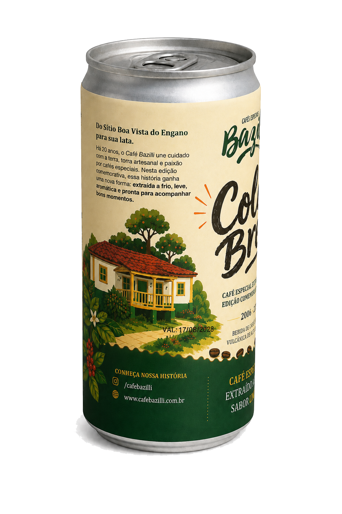
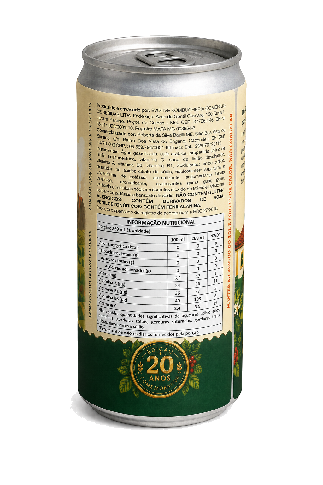

Café Bazilli · sabor limão
Cold Brew de Café Especial sabor limão.
Extraído a frio, gaseificado e pronto para beber. Uma combinação leve e aromática entre o café especial e o frescor do limão. Não contém glúten.
Produzido pela família Bazilli no Sítio Boa Vista do Engano, em Caconde/SP, na Região Vulcânica. Torrado artesanalmente, em pequenos lotes.
Da lavoura.
À xícara.
Café especial 100% Arábica
Caconde, São Paulo, Brasil
Cold brew de café especial sabor limão, extraído a frio, gaseificado e pronto para beber. Produzido com café 100% Arábica do Sítio Boa Vista do Engano, em Caconde/SP.
01 / 03
Café Bazilli · sabor limão
Extraído a frio, gaseificado e pronto para beber. Uma combinação leve e aromática entre o café especial e o frescor do limão. Não contém glúten.


Role para girar
Natural · Honey · Lavado
Edições limitadas, selecionadas por origem, rastreabilidade e identidade sensorial. Cada microlote revela uma expressão diferente da produção da família Bazilli.
Torra média · café especial
Café torrado em grãos para moer na hora. Uma experiência completa de aroma, doçura e equilíbrio, preservada até o preparo.
Torrado e moído · torra média
Praticidade no preparo diário sem abrir mão da origem. Embalado para preservar as características do café especial da família Bazilli.
Coffea arábica
Cafeeiros cultivados em solo vulcânico a cerca de 1.000 m de altitude, em Caconde/SP. A base de tudo: terroir de origem controlada.
Terra vulcânica
Cafeeiros cultivados a cerca de 1.000 m de altitude, no Sítio Boa Vista do Engano, em Caconde/SP.
Colheita seletiva
Os frutos maduros são escolhidos com cuidado para preservar doçura, equilíbrio e identidade de cada lote.
Torra artesanal
Perfis de torra desenvolvidos para revelar a doçura natural e respeitar as características do café.
Controle em cada etapa
Da lavoura à embalagem, cada café passa pela curadoria da família Bazilli para chegar fresco à xícara.
A história do Café Bazilli é a história da família Bazilli nos cafezais de Caconde. Desde 1916, o café é acompanhado da lavoura à xícara — com amor pelo que se faz.
Em 1916 a família Bazilli começou a cultivar café em Caconde, no Sítio Boa Vista do Engano. Quatro gerações depois, a mesma terra continua dando origem a cafés especiais.
O café produzido pela família esteve entre os sabores brasileiros apresentados ao Papa Bento XVI, um capítulo de orgulho que atravessou gerações.
Em Aparecida, o café voltou a participar de um encontro histórico durante a visita do Papa Francisco ao Brasil.
Roberta Bazilli fortaleceu a torra artesanal e aproximou ainda mais a produção da experiência de quem prepara e prova cada xícara.
O Café Bazilli conquistou o vice-campeonato nacional do Torrefação do Ano Brasil, reafirmando uma trajetória de técnica, origem e afeto.
“Diante de tantos títulos, não poderíamos esquecer do mais importante: amor pelo que faz!”
Vice-campeã nacional do Torrefação do Ano Brasil, em 2024.
Uma parada obrigatória no mapa dos apaixonados por café.
Reconhecimentos: Santo Café, Torrefação do Ano, Rotas do Café, Q-Grader, Região Vulcânica, Caconde/SP.
Café torrado em grãos
Para moer na hora e explorar cada método.
Assine e ganhe 15%
Natural · Honey · Lavado
Edições limitadas, selecionadas lote a lote.
Assine e ganhe 15%
Café torrado e moído
Praticidade no preparo diário, com origem.
Assine e ganhe 15%
Os cafés são enviados de Caconde/SP para todo o Brasil. Deixe seu e-mail e avisaremos quando sua cidade estiver na rota.
Encontre onde comprar